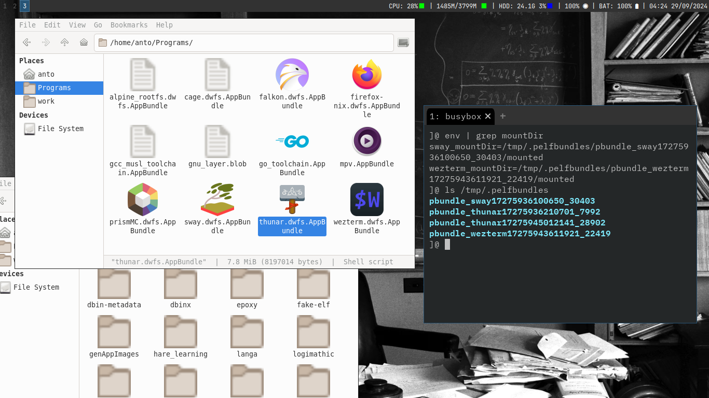

PELF - The AppBundle format and the AppBundle Creation Tool
PELF used to stand for Pack an Elf, but we slowly evolved into a much simpler yet more featureful alternative to .AppImages
PELF now refers to the tool used to create .AppBundles
.AppBundles are an executable packaging format designed to pack applications, toolchains, window managers, and multiple programs into a single portable file.
AppBundles can serve as a drop-in replacement for AppImages. Both AppBundles and AppImages utilize the AppDir specification, making it easy to unpack an AppImage and re-package it as an AppBundle, gaining many features, such as faster start-up times, better compression and file de-duplication, and faster build-time. A completely customizable and flexible format.
Advantages
- Support for multiple filesystem formats: Support for multiple mountable filesystem formats, we currently support
squashfsanddwarfs. With ongoing efforts to add a third alternative that isn’t copylefted/propietary - Simplicity: PELF is a minimalistic Go program that makes creating portable POSIX executables a trivial task.
- Flexibility of AppBundles: AppBundles do not force compliance with the AppDir standard. For example, you can bundle window managers and basic GUI utilities into a single file (as done with
Sway.AppBundle). You can even package toolchains as single-file executables. - Endless Possibilities: With a custom AppRun script, you can create versatile
.AppBundles. For instance, packaging a Rick Roll video with a video player that works on both glibc and musl systems is straightforward. You can even generate AppBundles that overlay on top of each other. - Complete tooling: The
pelfddaemon (and its GUI version) are available for use as system integrators, they’re in charge of adding the AppBundles that you put under ~/Applications in your “start menu”. This is one of the many programs that are part of the tooling, another great tool is pelfCreator, which lets you create programs via simple one-liners (by default it uses an Alpine rootfs + bwrap, but you can get smaller binaries via using -x to only keep the binaries you want), a one-liner to pack Chromium into a single-file executable looks like this:pelfCreator --maintainer "xplshn" --name "org.chromium.Chromium" --pkg-add "chromium" --entrypoint "chromium.desktop" - Predictable mount directories: Our mount directories contain the AppBundle’s ID, making it clear to which AppBundle the mount directory belongs
- Reliable unmount: The AppBundle starts a background task to unmount the filesystem, and it retries 5 times, then it forces the unmount if all 5 tries failed
- Leverages many handy env variables: Thus making .AppBundles very flexible and scriptable
- AppImage compatibility: The –appimage-* flags are supported by our runtime, making us an actual drop-in replacement
Usage
./pelf --add-appdir "nano-14_02_2025.AppDir" --appbundle-id "nano-14_02_2025-xplshn" --output-to "nano-14_02_2025.dwfs.AppBundle"
OR
./pelf --add-appdir "nano-14_02_2025.AppDir" --appbundle-id "nano-14_02_2025-xplshn" --output-to "nano-14_02_2025.sqfs.AppBundle"
Build ./pelf
- Get yourself an up-to-date
gotoolchain and installdbininto your system or put it anywhere in your$PATH - execute
./cbuild.sh - Put the resulting
./pelfbinary in your$PATH - Spread the joy of AppBundles! :)
Usage of the Resulting .AppBundle
By using the
--pbundle_linkoption, you can access files contained within the./binor./usr/bindirectories of an.AppBundle, inheriting environment variables likePATH. This allows multiple AppBundles to stack on top of each other, sharing libraries and binaries across “parent” bundles.
Explanation
You specify an AppDir to be packed and an ID for the app. This ID will be used when mounting the .AppBundle and should include the packing date, the project or program name, and the maintainer’s information. While you can choose an arbitrary name, it’s not recommended.
Additionally, we embed the tools used for mounting and unmounting the .AppBundle, such as dwarfs when using pelf.

Known working distros/OSes:
- Ubuntu (10.04 onwards) & derivatives, Ubuntu Touch
- Alpine Linux 2.+ onwards
- Void Linux Musl/Glibc
- Debian/Devuan, and derivatives
- Fedora
- *SUSE
- Maemo leste
- AliceLinux
- FreeBSD’s Linuxlator
- FreeBSD native
- Chimera Linux
- LFS (Linux from Scratch)
- Most if not all Musl linux distributions
- etc (please contribute to this list if you’re a user of AppBundles)
Resources:
- AppBundle format documentation & specifications
- The AppBundleHUB a repo which builds a ton of portable AppBundles in an automated fashion, using GH actions. (we have a webStore too, tho that is WIP)
- dbin a self-contained, portable, statically linked, package manager, +4000 binaries (portable, self-contained/static) are available in its repos at the time of writting. Among these, are the AppBundles from the AppBundleHUB and from pkgforge